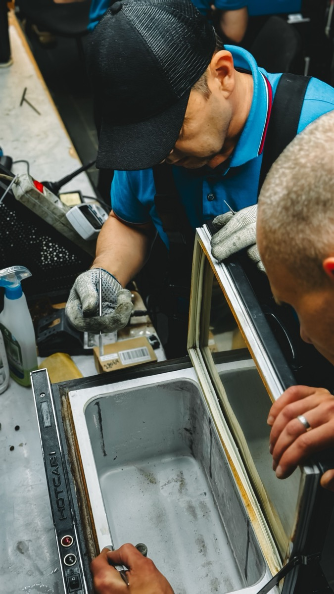

AC Services & Types of AC
Types of AC
Large Space & Commercial ACs are our core work, including Cassette AC, Tower AC and Central AC systems for offices, showrooms, halls, clinics, restaurants and industrial spaces.

Large Space & Commercial ACs
Inspection, servicing and breakdown support for large business cooling systems.

Cassette AC
Ceiling cassette AC cleaning, drainage care, cooling checks and repair support.

Tower AC
Tower AC servicing and repair for large rooms, showrooms and commercial floors.

Central AC
Central AC maintenance, fault checks and preventive service for large spaces.
All Services

AC Service
AC servicing, filter cleaning, coil cleaning, gas check-up and cooling performance inspection.
AC Repair
Fast AC breakdown repair for split AC, window AC, inverter AC, cassette AC and ductable AC.
AC Installation
Professional AC installation, dismantling, shifting and copper piping setup.
AC Maintenance
AMC and preventive maintenance for homes, offices, shops, clinics, restaurants and commercial spaces.
Commercial AC Service
Core support for large space ACs, cassette AC, tower AC and central AC systems.
AC Gas Filling
AC gas leak checking, vacuuming, pressure testing and gas refilling support.
New AC Sale
Assistance for buying new AC units with installation and service support.
Old AC Purchase
Purchase and pickup support for old working and non-working AC units.
Scrap AC Buying
Doorstep scrap AC buying and removal with quick pickup support.

Refrigerator Service
Refrigerator cooling issue repair, compressor checks and doorstep service.